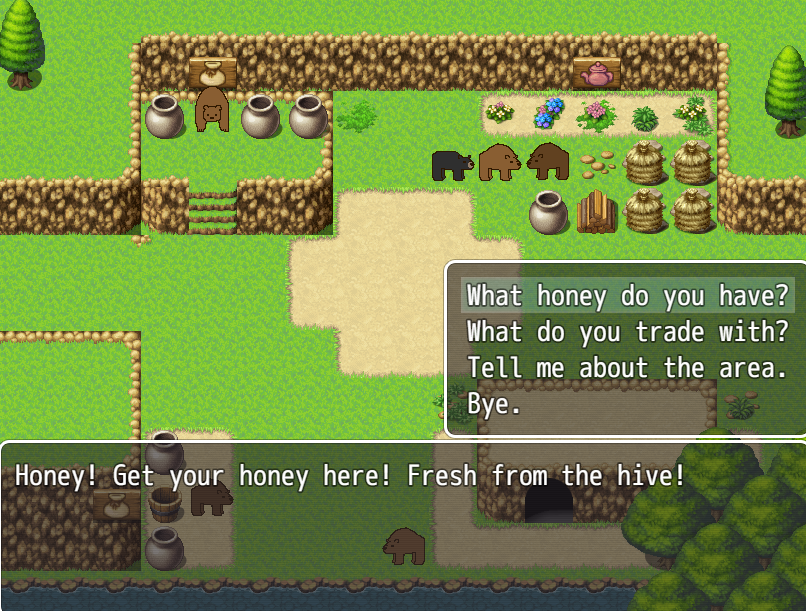

The Beta Pit
I really hate starting things that never get finished, but even moreso, I hate leaving unfinished projects hidden in my dev folders where no one can ever see them. I'm in that phase where parenthood, work, and personal health are taking their toll on me and I can't commit to months of gamedev anymore. So I think it's worthwhile to at least keep a record of what didn't get finished, so I can at least share the cool stuff that did.
Do-Gooders / SkyWatch One

I spent a lot of time working on this one, and the game is fully playable in "Placeholder Mode". This original game was going to be a superhero-themed point-n-click adventure, set in a world with superhero fatigue, where you play as that one weirdo who still stands on rooftops in a costume. I really wish I could've seen this one through, but parenthood aside, Unity is one of the worst engines to build an adventure game in. Every time I had a chance to work on it, Unity would update, and I'd lose weeks debugging all the code that got messed up. I spent more time debugging this than any other game. I also admit my 3D modeling skills are incredibly subpar, and working on this after 11pm every night, I delivered some really tired renders. This version of the playable game includes a mostly finished first chapter with a couple action sequences. Most of the graphics are just doodles, and all the existing music is just unlicensed placeholders I put in for fun. But the whole first chapter in the city looks close to the intended final product. There's some continuity issues with the story after Chapter 1, but the rest of the game still functions as a first draft of the story. I'll leave a downloadable link for the beta build of the game below.
Download "Do-Gooders Buggy Placeholder Edition" here.
I'll add more dev art here at a later time.
|
Fuzzy Fantasy (BETA)

Last year, I tried to get back on the devtrain by trying my hand at RPG Maker (because that engine already comes with lots of finished assets). Inspired by the 1988 film, "The Bear" I wanted to make an RPG centered around a grizzly bear and cub fighting their way through the woods. What I quickly discovered is that even though I love playing turn-based RPGs, I hate doing the math for stats and combat encounters. After the first section of the game where the bears fight a gang of squirrels, I lost interest in doing a combat RPG and the rest of the game is just some goofy uneventful encounters with humans and other bears which builds up to an anticlimatic ending. There's no strategy involved. Just walk around and do bear stuff for about 20 minutes of silly content. If you find the cub's mom, consider your quest complete.
Download "Fuzzy Fantasy" here
|
|